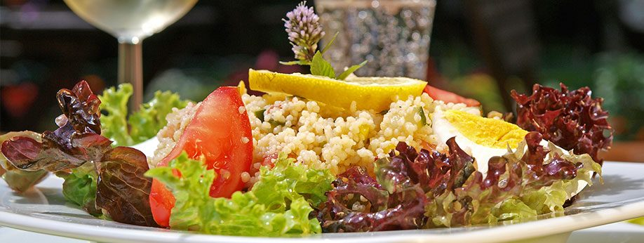

Warme Küche
Ab 11:30 Uhr, durchgehend bis in den Abend. Wochenends gibt es zusätzlich die Fritattensuppe.
Unverbindliche Gestaltungs-Vorschau · keine offizielle Website des Heurigen Österreicher · erstellt von AVOS Solutions

Ein Gericht, das es in der Familie schon lange gibt, an einem einzigen Tag – solange der Vorrat reicht.
Den nächsten Termin geben wir hier und auf Facebook bekannt. Wer nichts versäumen will, trägt sich in den Schmankerl-Verteiler ein.
Weil es nicht allen so gut geht wie uns, führen wir 2026 eine Suppen-Aktion durch: Von jeder Suppe, die in diesem Jahr bei uns gegessen wird, spenden wir 50 Cent an die „Gruft“. Das gilt für die Suppen auf der Schmankerl-Karte ebenso wie für die Fritattensuppe am Wochenende.
Die „Gruft“ ist eine Obdachlosen-Einrichtung der Caritas im 6. Bezirk, die 2026 ihren 40. Geburtstag „feiert“. Menschen ohne ständige Bleibe können dort vorübergehend übernachten, duschen und werden mit warmen Mahlzeiten und Kleidung versorgt.
Ab 11:30 Uhr, durchgehend bis in den Abend. Wochenends gibt es zusätzlich die Fritattensuppe.
Aufstriche, Käse, Eingelegtes und kalte Schmankerln – klassisch am Buffet ausgesucht.
Vegan, glutenfrei oder eine Unverträglichkeit? Sprechen Sie bitte direkt mit der Chefin – am besten schon bei der Reservierung.
Ab etwa zehn Personen stimmen wir das Essen vorab ab. Feier anfragen